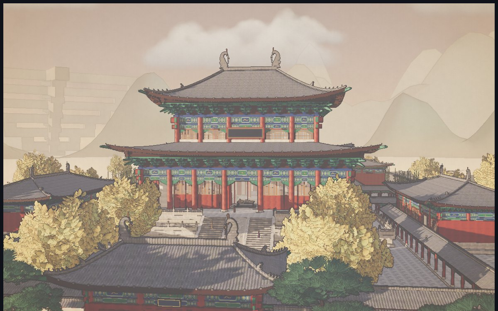
一座讲榫卯的线上博物馆：从一个节点，到一件家具，到一座房屋。
不着一钉的木构，靠的是榫与卯的咬合。全馆只讲这一件事，按“由小到大”排成一条路。
一个节点 → 一件器物 → 一座房屋 → 一座塔与一座桥 → 当代创作 → 自己动手。先在中庭看到最大的一朵斗拱，再回头从最小的节点讲起，一级级放大。
两进院落加一条运河。中轴直进主殿，中庭的原大斗拱是开场；之后顺时针绕院一周，前院讲节点和家具，北院讲大木作。
借工笔界画的画法：墨线勾边、青绿彩画、绢色调。时间定在黄昏，暖光低斜。
中轴线由南向北：山门、影壁、前院、主殿、后殿、北院木塔、运河廊桥、北岸。东西对称布置配殿和厢房，回廊把前院连成一圈。
院墙以内约 108 × 208 米。这是一座虚拟建筑，尺度按“看得清结构”定的，比真实可建的展馆偏大；面积数字用来说明各区之间的比例。
| 区域 | 位置 | 功能 | 面积（约，㎡） |
|---|---|---|---|
| 序厅 | 主殿前半进 | 导览、点题 | 270 |
| 中庭 | 主殿后半进 | 开场：原大斗拱 | 594 |
| 展厅一 | 西配殿南 | 直角与交叉 | 210 |
| 展厅二 | 西配殿北 | 拼接与延长 | 175 |
| 展厅三 | 后殿 | 家具 | 288 |
| 木塔底层 | 北院正中 | 塔的结构 | 196 |
| 展厅四 | 西厢 | 大木作 | 560 |
| 展厅五 | 东厢 | 榫卯与艺术 | 560 |
| 工坊 | 东配殿北 | 动手体验 | 175 |
| 尾厅 | 东配殿南 | 回顾、资料 | 210 |
| 室内合计 | 3,238 | ||
| 前院 | 山门与主殿之间 | 水池、石道、回廊 | 1,792 |
| 北院 | 后殿以北 | 含木塔、两厢占地 | 3,600 |
| 木拱廊桥 | 运河上 | 室外展品，可通行 | 286 |
| 北岸 | 运河以北 | 鲁班锁雕塑 | 2,754 |
面积按各区在程序里的范围框计算，是近似值，不含墙厚。
| 序 | 展区 | 主题 | 规划主展品 | 规划的其他展品 |
|---|---|---|---|---|
| 1 | 序厅 | 认路 | 全馆烫样（屋顶可揭开） | 屏风门，通向中庭 |
| 2 | 中庭 | 开场：榫卯能做到多大 | 唐式柱头铺作（原大） | 十二种构件说明；藻井 |
| 3 | 展厅一 | 一个节点怎样做出来 | 透榫加楔五步演示（放大） | 样块 4 件；木作工具墙 |
| 4 | 展厅二 | 接长、拼宽、防脱 | 燕尾榫箱角（放大，开合） | 样块 4 件；图版 |
| 5 | 展厅三 | 榫卯做成家具 | 明式圈椅；夹头榫平头案 | 两面构成展示墙 |
| 6 | 展厅四 | 从节点到房屋 | 清式平身科斗拱 | 抬梁、穿斗屋架各一榀 |
| 7 | 北院木塔 | 榫卯做成高层 | 五层木塔（建筑本身） | — |
| 8 | 塔内 | 塔是怎样搭起来的 | 应县木塔剖面模型 1:15 | 立面、剖面图 |
| 9 | 木拱廊桥（支线） | 榫卯做成桥 | 编木拱桥（建筑本身） | 北岸鲁班锁雕塑 |
| 10 | 展厅五 | 当代创作 | 悬浮的斗拱（装置） | 互承木构；窗棂灯墙 |
| 11 | 工坊 | 动手 | 四张工作台 | 八种木材墙 |
| 12 | 尾厅 | 回顾 | 藏品柜、索引桌 | 资料来源 |
表中是规划的展品。立体模型做过一版（20 余件，可点击拆解），目前撤下重做；建筑本身（木塔、廊桥）和墙面图版在线上可以看到。
立体展品做过一版，效果还不满意，目前全部撤下重做。展位、台座、灯光和墙面图版保留，每个展位立一块写着展品名称的“展品待定”签牌。
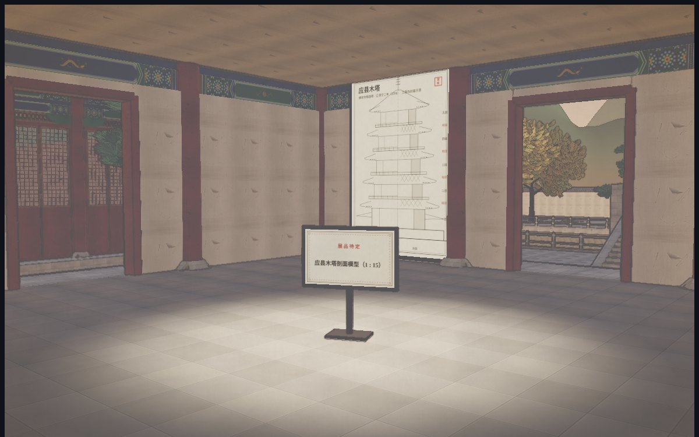
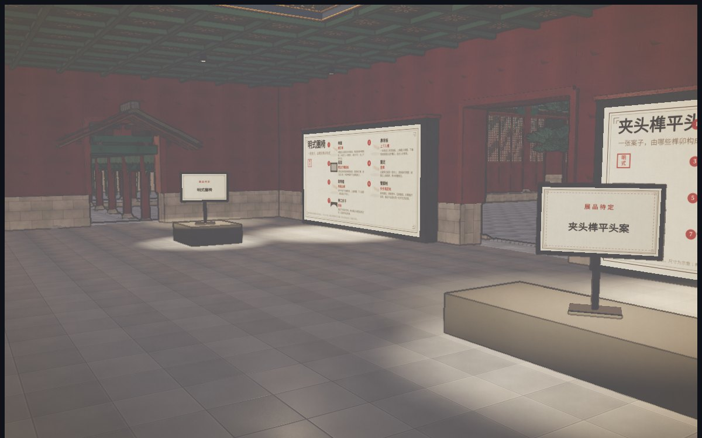
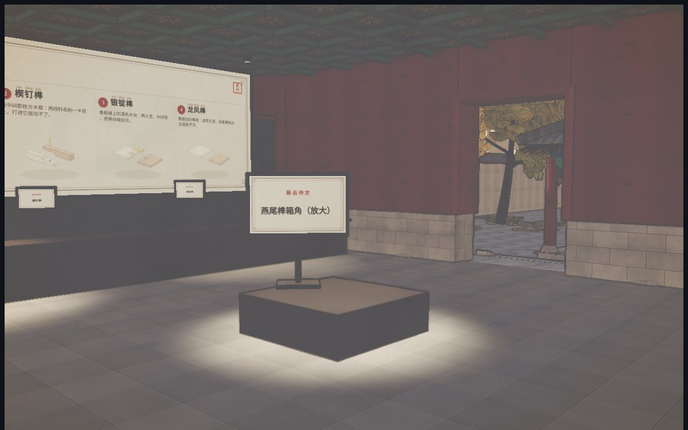
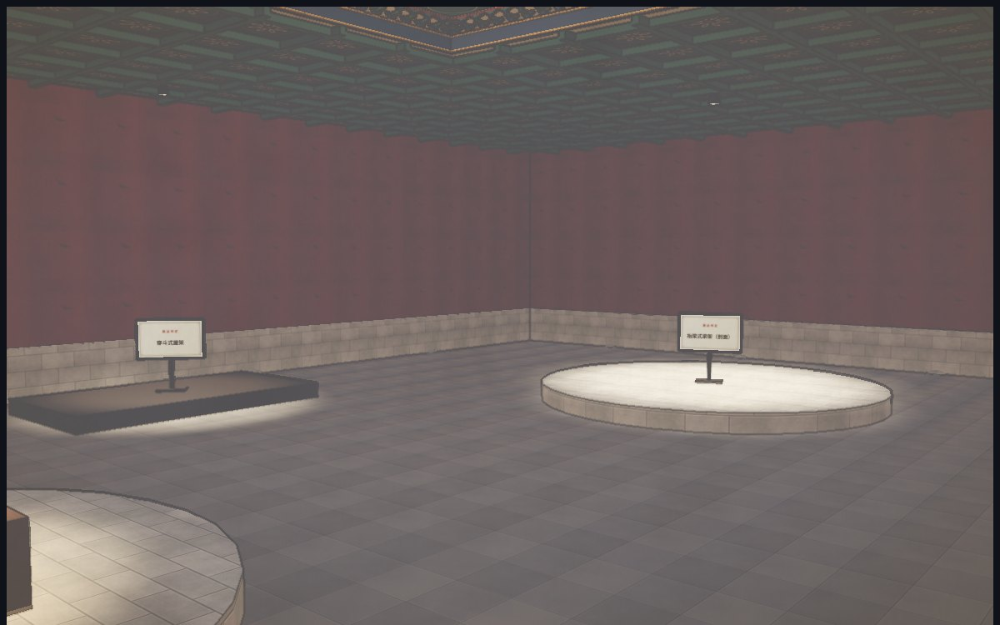
参考了 V&A、大英博物馆、盖蒂博物馆的展厅文字规范，定了四条规则，已在展厅一、二落实：
颜色取自官式建筑的彩画和墙面，展板与界面用同一套绢、墨、石青。
#9C3526殿身墙面#2C8A6F彩画、斗拱#2C529C彩画、额枋#D8A838彩画线、饰件#787A7B屋面#6B4630梁柱、椽#D2AB7C门窗、展品#F4F0E6台基、栏杆#EFE6D0展板底色#A3321F编号、印章#DBD0B6界面、加载页#2A221B文字、线稿#2B6A72当前项标记#F2C292天际线#6C78A0黄昏天空黄昏。太阳高度角约 8°，暖色低斜光，建筑拉出长影；天空由天顶的蓝灰过渡到天际的暖橙，远山带薄雾。
环境光压到室外的七成左右，每件主展品上方一盏暖色射灯（色值 #FFE0B0），从宫灯里打下来，在地面形成光斑。
早先把环境压得更暗，只留射灯，戏剧性强但看不清房间；现在提亮到能看清墙面和彩画，展品仍比周围亮一档。
八套材质贴图，全部由程序生成（不使用外部素材），每套含颜色、法线、粗糙度三张。
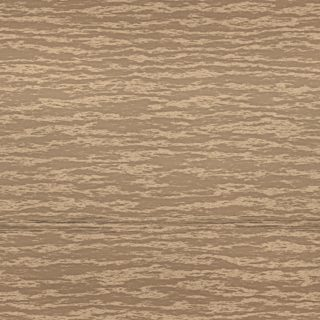
木梁柱、椽、展品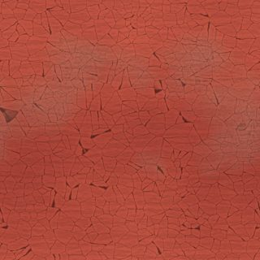
朱漆柱、门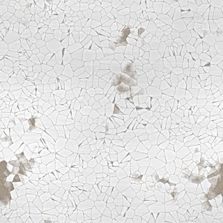
彩画底叠加青、绿、金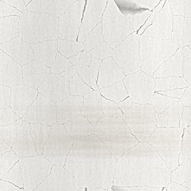
抹灰墙面，叠加朱色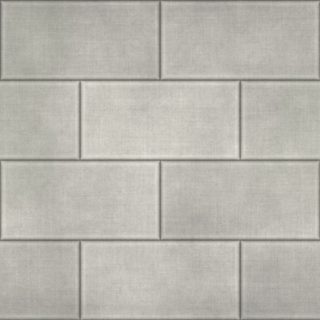
石台基、栏杆、雕刻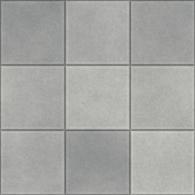
铺地院落石板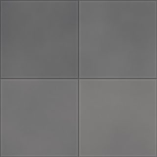
室内地面展厅方砖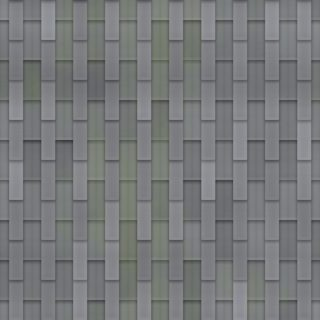
瓦屋面筒瓦表面在写实材质之上叠一层墨线勾边，得到“写实质感加工笔线条”的效果。